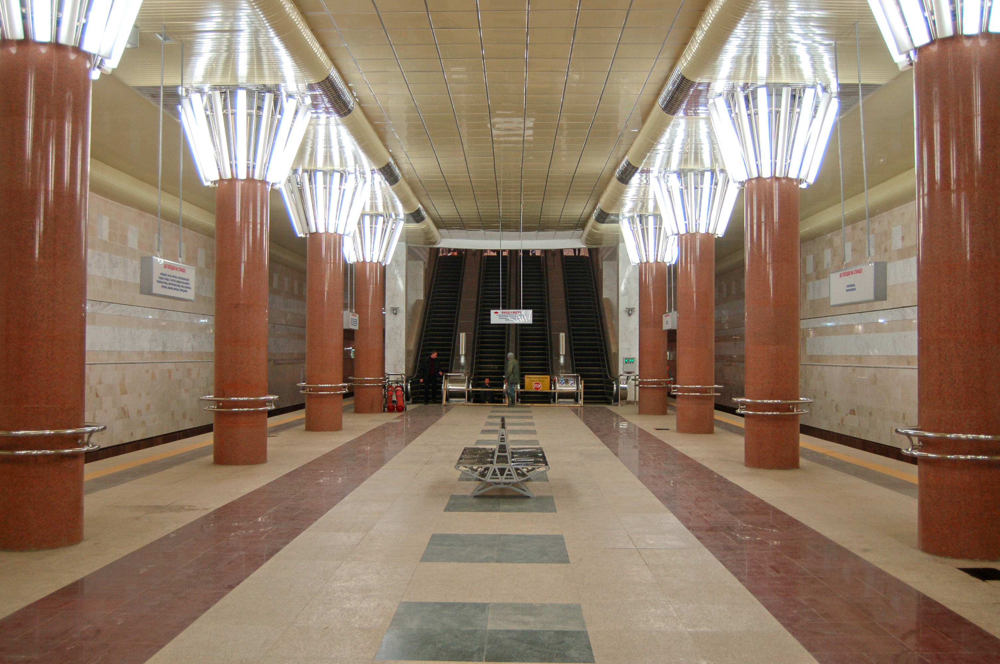
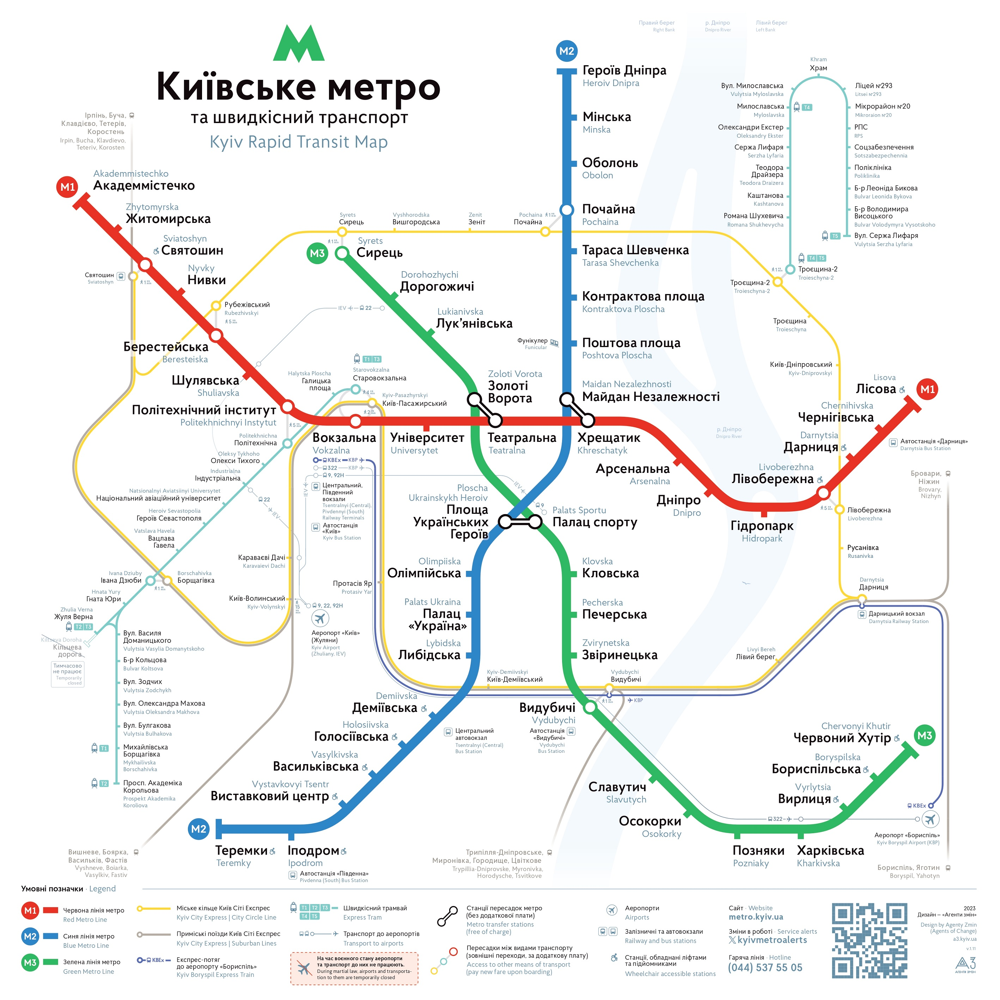

🚉 Demiivska Station / デミエフスカ駅 / Станція Деміївська
About
ENG 🇬🇧 -> JPN 🇯🇵 -> UKR 🇺🇦
[ENG]
Demiivska is the 47th station of the Kyiv subway, located on the Obolonsko-Teremkivska line between Lybidska and Holosiivska stations. It was opened on December 15, 2010. The name comes from the historical area of Demiivka. The station is equipped with a tactile surface.
It is located in the Holosiivskyi district of Kyiv near Demiivska Square.
The structure of the station is a shallow three-bay column with an island platform.
Track development: the station is without track development.
The platform is connected to the underground ticket office by a four-belt single-march escalator. The station is also equipped with two elevators for people with disabilities. The exit from the station is through an underground passage under Holosiivskyi Avenue to the Vernadskyi Library, the Central Bus Station, Demiivska Square, Valerii Lobanovskyi and Nauky Avenues. There is no ground lobby.
The peculiarity of the station is that the escalators are located in the center of the platform, not at the end, as is usual in the Kyiv metro.
In addition, the eastern end of the platform has a staircase leading to the technical premises of the station and connecting to the underpass (an additional emergency exit).
[JPN]
デミエフスカ駅はキーウ地下鉄の47番目の駅で、オボロンスコ・テレムキフスカ線のリビドスカ駅とホロシエフスカ駅の間にある。2010年12月15日に開業した。駅名はデミエフカの歴史的地域に由来する。駅には触覚が設置されている。
駅はキーウのホロシエフスキイ地区、デミエフスカ広場の近くにある。
駅の構造は、島式ホームを持つ浅い3ベイ柱である。
軌道開発：駅には軌道開発はない。
ホームと地下切符売り場は4レーンの単式エスカレーターで結ばれている。駅には身障者用のリフトも2基設置されている。駅の出口はホロシエフスキー通りの地下通路を通って、ヴェルナドスキー図書館、中央バスターミナル、デミイヴスカ広場、ヴァレリー・ロバノフスキー通り、ナウキー通りに通じている。地上ロビーはない。
この駅の特徴は、エスカレーターが通常のキーウ・メトロのようにホームの端ではなく、中央に設置されていることである。
さらに、ホームの東端には駅の技術施設に通じる階段があり、地下通路（追加の非常口）につながっている。
[UKR]
«Демі́ївська» — 47-ма станція Київського метрополітену, розташована на Оболонсько-Теремківській лінії між станціями «Либідська» та «Голосіївська». Відкрита 15 грудня 2010 року. Назва — від історичної місцевості Деміївка. На станції заставлено тактильне покриття.
Розташована у Голосіївському районі Києва біля Деміївської площі.
Конструкція станції — колонна трипрогінна мілкого закладення з острівною платформою.
Колійний розвиток: станція без колійного розвитку.
Платформа сполучена з підземним касовим залом чотиристрічковим одномаршевим ескалатором. Станція також обладнана двома ліфтами для осіб з обмеженими фізичними можливостями. Вихід зі станції — в підземний перехід під Голосіївським проспектом до бібліотеки імені В. І. Вернадського, Центрального автовокзалу, на Деміївську площу, до проспектів Валерія Лобановського та Науки. Наземний вестибюль відсутній.
Особливістю станції є те, що тут ескалатори розміщені в центрі платформи, а не в торці, як зазвичай в Київському метрополітені.
Крім того у східному торці платформи влаштовані сходи, що ведуть до технічних приміщень станції та сполучаються з підземним переходом (додатковий евакуаційний вихід).
Джерело: Вікіпедія

